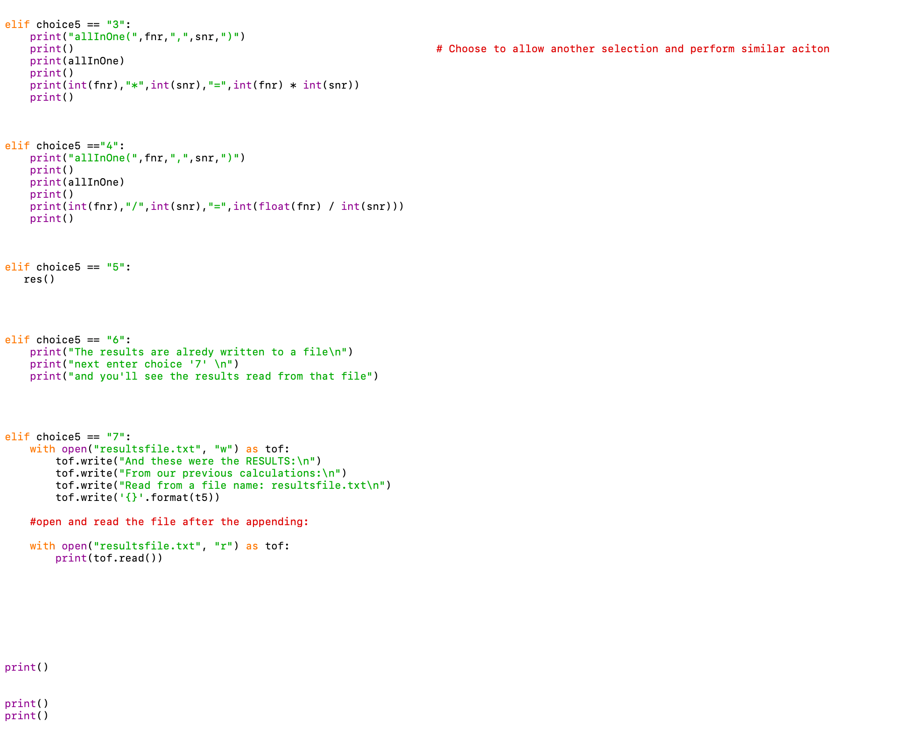
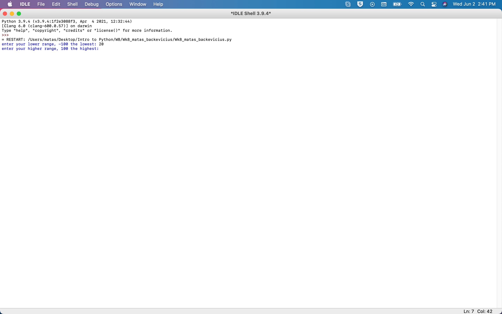
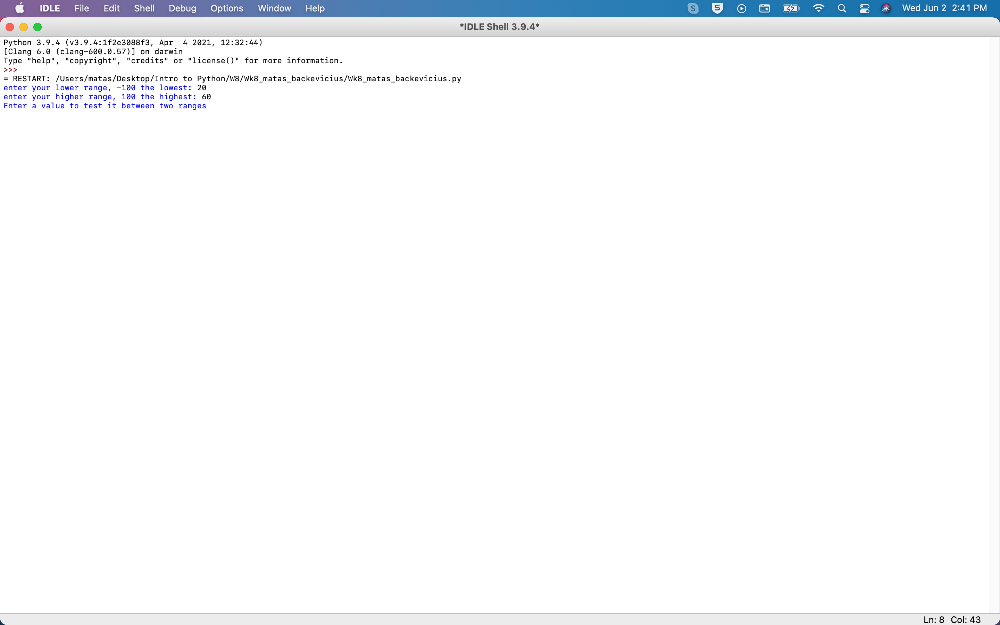
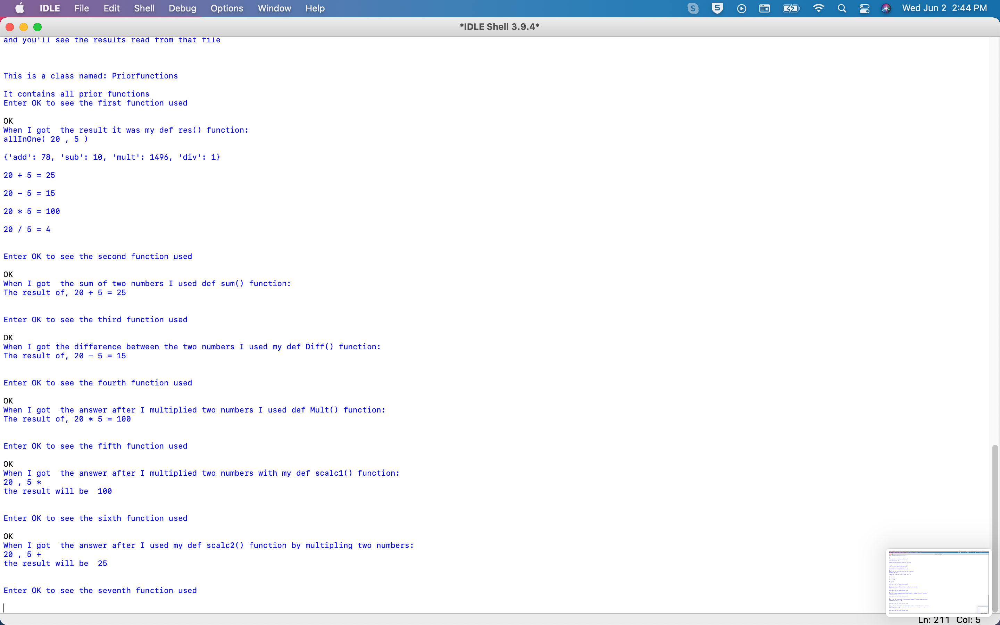

kaip matote, jame buvo „mylif“ failas, kuris yra atsakingas už tam tikro skaičiavimo funkcijos, pvz., pridėjimo ar atėmimo, iškvietimą.
Spustelėkite čia norėdami pamatyti paveikslėlį 1.
kaip matote, komentarų eilutės vaizduojamos svaro ženklu: #
Spustelėkite čia norėdami pamatyti paveikslėlį 2.
Spustelėkite čia, kad pamatytumėte 3 ir 4 paveikslėlius
Spustelėkite čia, kad pamatytumėte 5 ir 6 paveikslėlius
Spustelėkite čia, kad pamatytumėte 7 ir 8 paveikslėlius
Spustelėkite čia, kad pamatytumėte 9, 10 ir 20 paveikslus
ir dar kartą ši kilpa ...
Spustelėkite čia, kad pamatytumėte paveikslėlį 11
mums reikia šių pasirinkimų, kad galėtume pasinaudoti tuo pasirinkimu ir išspausdinti teiginį, kuris yra skaičiavimas, pvz., sudėjimas, atimtis, daug.
kaip matote, mes tai vadiname ciklu, nes norime, kad pasirinkimai kartotųsi, kol skaičiavimas nebus baigtas, o vartotojas patikrins visus pasirinkimus, pvz., 1 ir 2 pasirinkimus ir pan.
Spustelėkite čia, kad pamatytumėte paveikslėlį 12
kaip matote šioje kodo dalyje, anksčiau paminėtos def funkcijos () naudos šiuos kintamuosius ir (t) reikšmes, kad apskaičiuotų rezultatą.
Spustelėkite čia, kad pamatytumėte 13, 14 ir 15 paveikslus
Man buvo duota užduotis sukurti meniu, kai pasirenkamas vienas iš pasirinkimų, kad skaičiavimas būtų atliktas, todėl def funkcijos ir klasės deklaracija yra labai svarbi.
Spustelėkite čia, kad pamatytumėte 16 ir 17 paveikslus
Spustelėkite čia, kad pamatytumėte 18 ir 19 paveikslus
kaip jau minėjau anksčiau, def funkcija yra labai svarbi atliekant tuos skaičiavimus, kai pasirenkamas vartotojo įvesties pasirinkimas. Panašiai žemiau esančiame kodo paveikslėlyje galite pamatyti veiksmų, kurie bus atlikti, kai šios funkcijos, pvz., Def res (), bus išspausdintos, sąrašą.
Spustelėkite čia, kad pamatytumėte paveikslėlį 21

Taip pat sukuriamas failas, kuriame rodomas vartotojo nurodytų skaičių rezultatas.
Šį „Python“ skaičiuoklės kodą galite rasti „GitHub“ puslapyje: Click here
Dabar paleiskite KODĄ ir pažiūrėkime, kaip vykdomas šis kodas!
 
Spustelėkite čia, kad pamatytumėte 20 ir 21 paveikslus
Spustelėkite čia, kad pamatytumėte 22 ir 23 paveikslus
Spustelėkite čia, kad pamatytumėte 24 ir 25 paveikslėlius
Spustelėkite čia, kad pamatytumėte 26 ir 27 paveikslėlius
Spustelėkite čia, kad pamatytumėte 28 ir 29 paveikslėlius
Spustelėkite čia, kad pamatytumėte 30 ir 31 vaizdus
Spustelėkite čia, kad pamatytumėte 32 ir 33 paveikslėlius
Spustelėkite čia, kad pamatytumėte 34 ir 35 paveikslėlius
Spustelėkite čia, kad pamatytumėte 36 ir 37 paveikslėlius
Spustelėkite čia, kad pamatytumėte 38 ir 39 paveikslėlius
Spustelėkite čia, kad pamatytumėte 40 ir 41 paveikslėlius
Spustelėkite čia, kad pamatytumėte 16 ir 17 vaizdus
Spustelėkite čia, kad pamatytumėte 18 ir 19 vaizdus
Tai buvo visas šios programos kodas
Spustelėkite čia, jei norite grįžti į pagrindinį puslapį